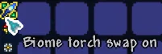

Это уникальное событие было введено в игру спустя некоторое время после выхода заключительного крупного обновления. Давайте же посмотрим, что оно собой представляет. Совсем недавно в Terraria присутствовала система неудачливых факелов: если вы устанавливали в биоме факел, не подходящий ему (снежный факел в джунглях, к примеру), игра наказывала вас за такое варварство понижением скрытого показателя удачи. Спустя пару патчей разработчики убрали эту механику, потому что она больше ограничивала игроков, чем помогала им. Совпадающие факелы все еще поднимают удачу, но "неправильные" на нее не влияют. В качестве пасхалки к этому интересному кусочку истории Terraria авторы ввели в обновлении 1.4.0.5 секретное испытание бога факелов.
Расположите в пределах эдак одного экрана более 100 факелов как минимум на глубине в 200 блоков от поверхности, и вы увидите сообщение от игры: The Torch God is haunting Terraria! (Бог факелов преследует Террарию!) Когда это произойдет, все факелы неподалеку начнут стрелять в вас огненными шарами. При этом "отстрелявшиеся" источники света будут погасать, сигнализируя о том, как долго еще вам предстоит выживать, пока ивент не завершится. Никакие специальные монстры не появляются, но обычный спавн все еще действует. Для вашего удобства рекомендую использовать Успокаивающее Зелье (Calming Potion), чтобы ничто не мешало вам проходить испытание. Во время испытания на вас будет наложен дебафф "Blackout" (слепота), серьезно снижающий яркость освещения. Рекомендую использовать зелья света, чтобы не возникало особых трудностей в передвижении. Из других подсказок: подготовьте арену, сделав ее пустым пространством со свободой передвижения. Вы никогда не знаете, какой факел выстрелит следующим, а потому максимум мобильности - залог успеха. К примеру, вы можете заполнить комнату веревками или деревянными платформами. Набор ниндзя и высокие показатели брони также серьезно увеличат ваши шансы на выживание.

Когда последний факел погаснет, спустя короткий промежуток времени огни загорятся снова, а неподалеку выпадет предмет Покровительство Бога Факелов (Torch God's Favor).
Вы можете смело использовать его сразу же после поднятия: сделав это, вы получите новую способность,

которую можно включать и отключать на панели рядом с инвентарем.
Суть ее очень простая: когда способность активна, во время помещения любого факела игра всегда будет менять его внешний вид на тот тип, который соответствует биому, в котором вы находитесь. Это в свою очередь упростит жизнь всем, кто всегда стремится выжимать из своего процесса максимум, добавляя небольшие бонусы к удаче. Приятная способность, не правда ли?